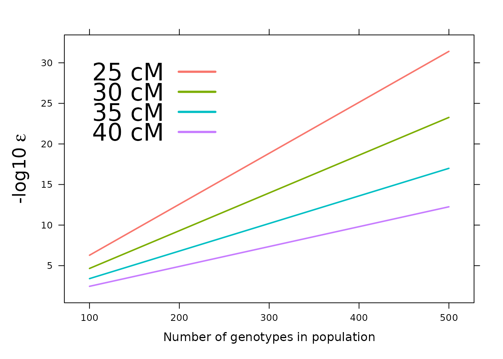
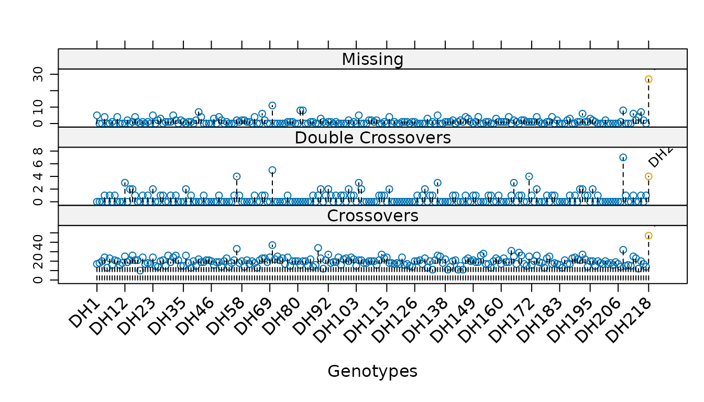
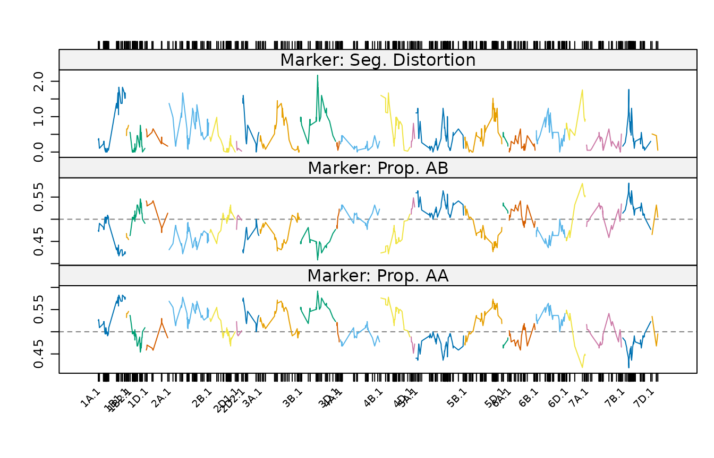
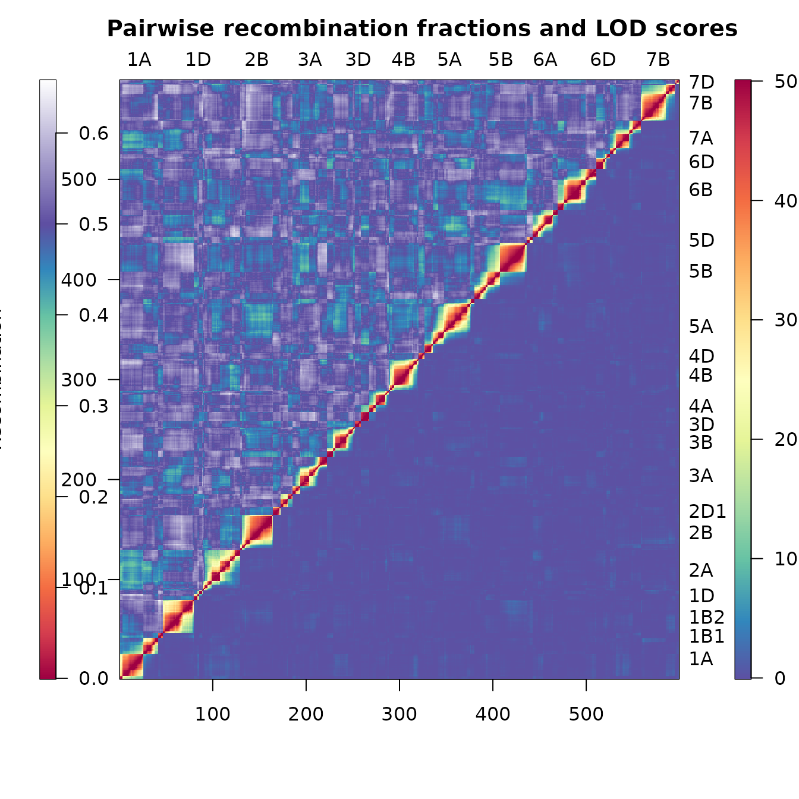

Linkage map construction with ASMap
Julian Taylor and David Butler
Source:vignettes/ASMap.Rmd
ASMap.RmdThis vignette introduces the construction of a linkage map with ASMap, the arguments that most influence the outcome, and the facilities provided for assessing the result. It is intended to be read once, in order, by someone meeting the package for the first time.
Scope. This is a short introduction. Complete documentation — nine further articles covering every function, the technical basis of the MSTmap algorithm, and a worked example carrying an unconstructed 3,023 marker barley backcross through to a diagnosed seven linkage group map — is published at https://drj001.github.io/ASMap/ and listed at the end of this document. Individual functions are documented in the help pages.
Construction is performed by the MSTmap algorithm (Wu et al. 2008), which
clusters markers into linkage groups and determines an optimal order
within each group in a single pass. This distinguishes it from the
two-stage procedures common elsewhere, in which a non-exhaustive initial
ordering is followed by an exhaustive search within a sliding marker
window. The returned object is an R/qtl cross object (Broman and Wu 2014), so
the facilities of that package remain available throughout.
The package in outline
The functions divide into three stages of a map construction workflow.
| Stage | Functions | Purpose |
|---|---|---|
| Pre-construction |
statGen(), profileGen(),
genClones(), fixClones(),
statMark(), profileMark(),
pValue(), pullCross()
|
Diagnose and curate genotypes and markers before a map is built, and set problematic markers aside |
| Construction | mstmap() |
Cluster markers into linkage groups, order them, and estimate genetic distances |
| Post-construction |
pushCross(), heatMap(),
alignCross(), breakCross(),
mergeCross(), combineMap(),
subsetCross(), quickEst()
|
Reintroduce markers, display and interpret the map, and manipulate its structure |
The two pre- and post-construction stages are what distinguish a usable workflow from a single call to an ordering algorithm. Poor genotypes and uninformative markers degrade an order, and are more cheaply removed before construction than diagnosed afterwards.
Marker data
The package supplies five datasets. mapDHf is an
unconstructed doubled haploid wheat marker set, in the layout the
construction function requires: markers in rows, genotypes in
columns, with marker names in the rownames and
genotype names in the names.
The datasets are not lazy-loaded, and therefore require an explicit
data()call. Its omission results inobject 'mapDHf' not found.
[1] 599 218
mapDHf[1:5, 1:6] DH1 DH2 DH3 DH4 DH5 DH6
5B.m.2 B B B A A B
5A.m.52 B B A A B A
2B.m.1 A B A B B A
6B.m.3 B B A B A A
5A.m.43 B B A B B AConstruction
A single call clusters the markers into linkage groups, orders the markers within each group, and estimates the genetic distances between them.
map <- mstmap(mapDHf, pop.type = "DH", dist.fun = "kosambi", p.value = 1e-06)Number of linkage groups: 24
The size of the linkage groups are: 56 54 35 41 4 37 6 30 40 27 37 13 15 10 21 6 32 33 33 41 6 9 5 8
The number of bins in each linkage group: 55 53 34 41 3 36 6 29 40 27 36 13 14 9 21 5 32 33 32 41 5 8 4 7
nchr(map)[1] 24 L1 L2 L3 L4 L5 L6 L7 L8 L9 L10 L11 L12 L13
142.8 181.9 97.4 115.4 21.7 108.2 13.3 133.9 153.2 98.7 145.8 60.4 72.2
L14 L15 L16 L17 L18 L19 L20 L21 L22 L23 L24
81.2 98.2 8.7 109.5 60.9 134.5 104.0 18.0 7.8 7.8 19.2 The linkage group summary printed above is emitted by the MSTmap
algorithm itself rather than by R, and appears independently of the
trace argument.
plotMap(map)Where the markers already reside in a cross object, the
same generic accepts it directly. Two combinations of arguments recur
throughout the documentation:
# cluster and order from scratch, disregarding existing linkage groups
mstmap(cross, bychr = FALSE, p.value = 1e-12)
# re-order markers within existing linkage groups, without splitting them
mstmap(cross, bychr = TRUE, p.value = 2)A p.value greater than unity suppresses clustering
entirely, which is the mechanism underlying the second of these.
The choice of p.value
The p.value argument sets the threshold at which markers
are separated into distinct linkage groups, and is the single argument
that most affects the result. Its appropriate value depends strongly on
the size of the population, larger populations requiring a smaller
value. The relationship may be inspected directly, so that the choice
need not be made by trial alone.

For a population of approximately 300 individuals, a
p.value of 1e-12 corresponds to a threshold of
some 30 cM before two markers are placed in a common linkage group.
Diagnosing genotypes
The diagnostic functions operate on a cross object, and
are therefore applied either to a map obtained elsewhere or to an
existing map that is about to be reconstructed. statGen()
summarises each genotype by its number of crossovers, its number of
double crossovers, and its proportion of missing values.
[1] 10 47
sort(sg$dxo, decreasing = TRUE)[1:5]DH208 DH70 DH56 DH171 DH218
7 5 4 4 4 A double crossover across a short interval is improbable under normal
recombination, so genotypes accumulating them are candidates for
genotyping error. One genotype, DH208, carries seven.
profileGen() presents the same statistics graphically,
which exposes an isolated offender more readily than a sorted table
does. Supplying an expected recombination rate to xo.lambda
marks those genotypes whose crossover count departs significantly from
it.
profileGen(mapDH, bychr = FALSE, stat.type = c("xo", "dxo", "miss"),
id = "Genotype", xo.lambda = 25, layout = c(1, 3), lty = 2)
A single genotype is flagged here, DH218, whose 47
crossovers are the most in the population and well above the expectation
of 25. Derivation of an appropriate xo.lambda for a given
population is set out in the diagnostics
article.
profileGen()returns its statistics invisibly, including a logical vector namedxo.lambdathat marks the genotypes it has flagged. This pairs directly withsubsetCross(), which removes the offending individuals.
Genotypes that are unexpectedly similar, whether through inadvertent
duplication or genuine clonal relationship, are identified separately by
genClones() and may be combined by
fixClones().
Diagnosing markers and intervals
statMark() summarises the markers and the intervals
between them, returning a component for each.
[1] "chr" "pos" "neglog10P" "missing" "AA" "AB"
[7] "dxo"
colnames(sm$interval)[1] "chr" "pos" "erf" "lod" "dist" "mrf" "recomb"profileMark() profiles any combination of these
statistics along the linkage groups, drawing each group in a distinct
colour. Setting crit.val = "bonf" annotates those markers
whose segregation distortion remains significant after a Bonferroni
adjustment.
profileMark(mapDH, stat.type = c("seg.dist", "prop"), crit.val = "bonf",
layout = c(1, 3), type = "l", cex = 0.5)
Markers exhibiting distorted segregation or extreme allele proportions are candidates for withdrawal before construction, which is considered below.
Heat maps
heatMap() displays the pairwise estimated recombination
fractions and the pairwise LOD scores of linkage in a single figure,
each with its own legend. Consistent heat within a linkage group
indicates strong linkage between neighbouring markers; blocks of shared
heat between two groups suggest groups that may warrant merging.
heatMap(mapDH, lmax = 50)
Setting markers aside and reintroducing them
Uninformative markers are better withheld during construction than
deleted. pullCross() removes markers of a nominated type
from the map but retains them within the cross object, and
pushCross() returns them afterwards. The supported types
are "co.located", "seg.distortion" and
"missing".
[1] 590
names(mapDH2)[1] "geno" "pheno" "missing"
nrow(mapDH2$missing$table)[1] 9Nine markers have been withdrawn to a new missing
element of the object, from which they can be restored once a stable map
has been obtained.
The thresholds are deliberately reversed. Markers are pulled when the statistic falls below the threshold and pushed back when it exceeds one. Supplying the same threshold to both calls therefore selects nothing, and
pushCross()fails withThere are no markers to push back with these characteristics. The threshold given topushCross()must be the more permissive of the two.
[1] 599
names(mapDH3)[1] "geno" "pheno"All nine markers have been reinstated and the missing
element has been removed, leaving an object of the original size.
Further documentation
| Article | Subject |
|---|---|
| How the MSTmap algorithm works | The minimum spanning tree formulation, clustering and marker ordering |
| Constructing a linkage map | Both construction functions and the full set of MSTmap parameters |
| Pulling and pushing markers | Setting problematic markers aside and reintroducing them |
| Diagnosing genotypes and markers | Profiling of individuals, markers and intervals; genetic clones |
| Heat maps | Interpretation and tuning of the recombination fraction and LOD display |
| Manipulating linkage maps | Breaking, merging, subsetting and combining maps |
| Worked example I: construction | A barley backcross, from raw markers to a constructed map |
| Worked example II: refinement | Reintroduction of markers, merging of groups, fine mapping |
| Notes on the MSTmap algorithm | Distance calculations, mvest.bc and
detectBadData
|
Citing ASMap
The package is described in the Journal of Statistical
Software (Taylor and
Butler 2017), which should be cited in published work. The
current entry is given by citation("ASMap").